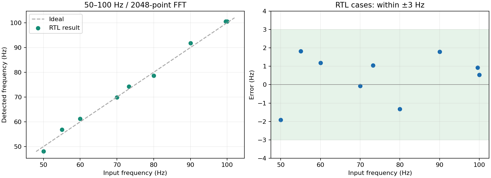

RTL、完整ADC引脚链路、UART解析和68项时序检查均通过。实板精度等待发生器实测。
保留原始ADC采样率，CIC低通滤波/128后采用2048点FFT。观察窗口228.78ms，频率格4.371Hz。原来的20ms/34.97Hz频格仅能显示粗略频率，无法满足几个Hz的目标。

| 输入 / Hz | 峰值bin | 结果 / Hz | 误差 / Hz |
|---|---|---|---|
| 50.00 | 11 | 48.08108 | -1.91892 |
| 55.00 | 13 | 56.82309 | +1.82309 |
| 60.00 | 14 | 61.19410 | +1.19410 |
| 70.00 | 16 | 69.93612 | -0.06388 |
| 80.00 | 18 | 78.67813 | -1.32187 |
| 90.00 | 21 | 91.79115 | +1.79115 |
| 100.00 | 23 | 100.53317 | +0.53317 |
| 73.25 | 17 | 74.30712 | +1.05712 |
| 99.60 | 23 | 100.53317 | +0.93317 |
实验2：50–100 Hz 正弦输入 / FPGA FFT找峰值 1. 关闭旧查看器。在Quartus Programmer选择 RxFftLowFreq50to100Hz.sof，勾选Program/Configure并Start，等待100% Successful。 文件：02_RTL/V0/output_rx_fft_lowfreq/RxFftLowFreq50to100Hz.sof 2. 发生器：连续正弦，50–100 Hz，100mVpp起步，0V偏置，负载设置High-Z。接主板P5 RX_IN，BNC外壳共地。 3. 主板USB-C数据线接电脑。打开Tools/RxFftLowFreqMonitor/RxFftLowFreqMonitor.exe。 输入COM号（本机之前是COM3），回车；输入当前发生器频率，回车。默认100 Hz。 4. 改变发生器频率后等至少1秒；关闭并重新打开查看器，输入新频率以计算正确误差。 目标频率只用于误差比较，不会影响FPGA的测量或强制显示目标值。 5. PASS_WITHIN_3HZ表示这一帧无检测到的异常，且相对你输入的目标频率误差不超过3Hz。 ADC_CLIPPED请降低输入幅度；ADC_TIMEOUT检查主板状态；旧版查看器/旧固件不能混用。 CSV自动保存在查看器旁边。此低频固件不用于40kHz或200kHz输入测试。 修改范围：独立实验2工程。实验1、UsMimoTestBench.vhd和original备份均保持原样。 ADC采样率仍为165MHz/144=1.145833MS/s，FPGA主PLL165MHz不变。 FPGA中新加3阶CIC低通滤波/128，输出8,951.823S/s；2048个有效样本覆盖228.780ms。 2048点Kaiser(beta4) FFT，频格4.371007Hz；减去整帧平均值，再计算功率谱和峰值。 峰值搜索bin10..25（约43.71–109.28Hz），给50/100Hz边缘留下频格余量。 每帧仍处理262144个原始采样间隔。2048点不是从原数据直接抽丢后凑成的波形。 100Hz每周期约89.5个有效点、整帧约22.9周期；50Hz约179点/周期、11.4周期。 滤波群延迟约166us，不改变稳定正弦的频率；不用于从该延迟推断声学距离。 UART仍是2Mbaud/8N1。新报文L1开头，防止旧查看器错误套用采样率。 功率单位为滤波后ADC码平方（raw/64），不是瓦特；不做窗增益/模拟前端幅度标定。 预期频率： 50.00 Hz -> 48.081 Hz (error -1.919 Hz) 55.00 Hz -> 56.823 Hz (error +1.823 Hz) 60.00 Hz -> 61.194 Hz (error +1.194 Hz) 70.00 Hz -> 69.936 Hz (error -0.064 Hz) 80.00 Hz -> 78.678 Hz (error -1.322 Hz) 90.00 Hz -> 91.791 Hz (error +1.791 Hz) 100.00 Hz -> 100.533 Hz (error +0.533 Hz) 验证：9组有效RTL用例（含相位/直流变化、噪声、300Hz弱干扰和抽取镜像干扰），最大误差1.919Hz。 另测试原始ADC削顶、无采样超时；滤波逐点对比独立FIR，FFT全部1025频点对比整数参考并核对浮点FFT。 4008组数值频率/相位检查最大误差2.194Hz（这部分是数值模型，不是4008次RTL仿真）。 另一次完整229ms顶层仿真保留真实时钟/SPI节拍，100Hz输入检出100.533Hz。 全部68项时序检查通过，最差裕量0.120ns。 模拟前端噪声、实际参考时钟及信号发生器误差需要上板确认；不承诺任意混合信号和噪声下均满足3Hz。